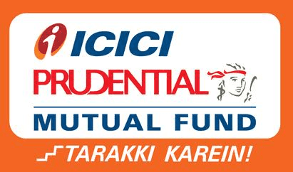

Cash ready to spend.
Gain₹0
Instant access · 0% interestInvest business surplus without choosing a fixed maturity date. Pazy brings company KYC, fund comparison and investment tracking into one digital workspace.
Liquid funds are market-linked. Returns and capital are not guaranteed.
Choose a deposit tenure.
Contractual returnNo fixed maturity date.
Market-linked returnRedeem units for that amount.
Keep the rest invested.
Redemptions follow scheme cut-offs, settlement timelines and exit-load rules. FD access depends on bank terms.
Finance teams at these businesses use Pazy.
Read their storiesCustomers of Pazy’s broader finance platform. These are not Treasury investment testimonials.
Compare a current account, an FD and a liquid fund in rupees. Change the balance, time window or FD quote to see the difference.
Enter a surplus above zero and an FD rate between 0% and 20%.
Cash ready to spend.
Cash committed to a fixed tenure.
HDFC Liquid Fund · Regular Growth
₹36,000 higher gain than the FD at these rates, before fees.
Before tax, exit loads and service fees. The liquid-fund rate is historical, not guaranteed. FD early-exit terms vary by bank.
Illustration, not a forecast. Simple-interest calculation: amount × annual rate × days ÷ 365. FD rate is your input, not a current bank offer; actual tenure, compounding and early-exit terms vary. The liquid illustration uses HDFC Liquid Fund Regular Growth’s past 1-year return of 6.36% as at 30 Sep 2026. Short-period figures extrapolate that annual rate; they are not actual 30/90-day returns. Figures exclude tax, exit loads and Pazy fees. NAV returns already reflect fund expenses.
| What matters | Current account | Fixed deposit | Liquid mutual fund |
|---|---|---|---|
| Return | 0% interest | Fixed rate | Market-linked return |
| Commitment | No tenure | Fixed tenure | No fixed maturity |
| Early access | Instant | Penalty may apply* | Usually T+1* |
| Partial withdrawal | Spend as needed | Bank terms apply | Redeem part or all |
| Risk | Bank risk | Bank risk | Capital at risk |
*FD withdrawal terms vary; flexi and sweep FDs differ. Liquid-fund redemptions follow cut-offs, exit loads and settlement rules. T+1 means the next business day; exceptions and holidays can affect access. Keep operating cash available.
Start with liquid funds. Explore other categories as your cash horizon changes.

Invests in securities maturing the next business day.
Compare the portfolio, risk and access terms against your cash needs.
Rupee illustrations use your selected surplus amount and the published past one-year return, regardless of the calculator’s shorter time window. They exclude tax, exit loads and Pazy service fees. Past performance does not predict future returns. Different categories carry different risks and access terms. Review the current Riskometer, costs and scheme documents before investing.
Mutual funds aren’t only for individual investors or long-term equity investing.
of liquid and money-market mutual-fund assets were held by institutional investors.
Source: AMFI · August 2025, page 4Institutions include domestic and foreign institutions and banks. Industry data, not Pazy customer data.The investment choice is one decision. How much work it creates for your finance team is another.
| The task | Broker / dealing desk | Pazy Treasury |
|---|---|---|
| Company KYC | Paper forms. Follow-ups. | Digital checklist |
| Fund choice | Desk suggestions | 4,000+ funds to compare |
| Approvals | Calls & emails | Roles, limits & approvals |
| Portfolio updates | Ask for statements | Holdings in one view |
| Redemption | Call the desk | Request online |
| Accounting | Manual entries | Tally / ERP sync* |
| Cash visibility | Separate tools | Cash + funds + payables |
The left column describes a manual, relationship-led workflow; broker capabilities vary. Pazy accounting depends on supported integrations and configuration. Digital onboarding still requires KYC approval. Fund returns and redemption timelines depend on the scheme, whichever platform you use.
Check documents, compare options and review holdings before you chase anyone for an update.
See submitted, missing and correction-required documents against one checklist.
Compare risk, performance and access terms, rather than choosing on a return figure alone.
See your holdings valued at the latest published NAV, with the valuation date and order status.
Coverage of Pazy’s pre-seed funding round and its work simplifying business finance.
Funding coverage concerns Pazy’s business, not an endorsement of Treasury funds or their investment performance.
See how finance teams already use Pazy to bring structure and visibility to their work.
“In the demo, it became very clear that these guys are very attuned to the needs of the customer.”
Naga Subramanya
Finance Director, Sprinto
Pazy’s published customer story shows how WhiteGold simplified finance operations.
Read the finance-platform storyThese stories relate to Pazy’s finance platform, not Treasury returns or mutual-fund performance.
ARN-364831
Verify registrationTransaction platform
Security credentials published by Pazy
View the security centreRegistered bank account
Investment order routing
Company folio and fund units
Pazy facilitates your investment. Your invested principal is not pooled in a Pazy account. Your onboarding and setup fees are separate service payments.
Registration and security credentials do not guarantee investment returns or protect against market losses.
Four clear steps to Treasury access. Your investment amount is a separate decision.
Share company and contact details.
FreeStart digital onboarding and open your company document checklist.
Onboarding paymentSubmit documents, resolve corrections and wait for approval.
Approval requiredAfter KYC approval, complete setup to access the Treasury experience.
Setup feeBank proof · Company PAN · Board resolution / authorisation · Signatory details · Account-opening form
Requirements vary by entity; additional KYC and beneficial-owner information may be needed.Total service fees: ₹5,199.
Your investment amount is separate.
The ₹5,000 step only opens after KYC approval. Paying ₹199 does not guarantee approval.
Create your accountCompany and contact details.
FreeStart onboardingBefore submitting company KYC.
₹199Get KYC approvedSubmit documents and resolve corrections.
ReviewComplete setupOnly after KYC approval.
₹5,000Total service feesNeither payment buys mutual-fund units.
₹5,199Prototype pricing. Tax treatment, ₹199 refund / credit policy and final fee inclusions are awaiting confirmation. Fund expenses, any exit loads and distributor commission disclosures are separate.
Returns, access, risk and fees. Get clear on each one.
It may, but there is no guarantee. Compare the actual FD rate with the fund’s performance, expenses, tax treatment and risk. Past fund performance does not predict future returns. The reason to consider a liquid fund is its combination of return potential and flexible access, rather than a promise of a higher rate.
Yes. Liquid funds invest in short-term debt and money-market instruments, but their value can fall. Credit, interest-rate and liquidity risks remain. They are not bank deposits and have no capital guarantee. Review the scheme’s Riskometer and documents before investing.
Liquid and overnight funds typically pay redemption proceeds on the next business day, subject to the scheme’s terms, cut-offs and processing. Holidays and exceptional conditions can delay access. Confirm the specific timeline before investing money needed for payroll, tax or other commitments.
No. You can evaluate liquid funds for new surplus or cash from an FD as it matures. Keep essential operating and emergency cash available. Decide the allocation using your cash-flow needs and company investment policy.
Pazy Treasury’s starting point is ₹5 lakh of business surplus. This should be money available after operations, known commitments and a contingency buffer. Scheme minimums and suitability still apply.
Registration is free. Pay ₹199 to start onboarding. Submit company documents for KYC. Once approved, pay a separate ₹5,000 setup fee. Total service fees are ₹5,199; your investment is additional. This is a proposed pricing journey: taxes, refund / credit policy and final fee inclusions need confirmation before live checkout. Fund expenses, applicable exit loads and distributor disclosures are separate.
Corrections appear against the required document so you can resubmit it. The ₹5,000 setup fee remains locked until approval. Paying ₹199 does not guarantee approval; the refund / credit policy is not finalised in this prototype.
Pazy acts as the mutual-fund distributor and facilitates transactions via BSE StAR MF. Fund units are held in your company’s folio with the fund house and registrar. Pazy does not pool your investment principal in its own account. Service fees are separate from invested money.
Digital company KYC. Clear fund information. One view of your holdings.
From ₹5 lakh surplus · ₹199 onboarding
₹5,000 setup after KYC approval